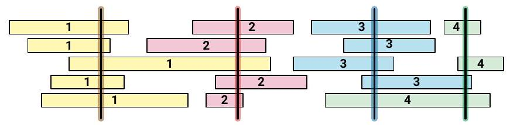
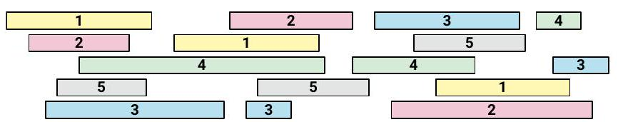

Advanced Algorithms. Week 1 Practice Problems
Advanced Algorithms.
Week 1 Practice Problems
These questions are from Chapter 4 of Jeff Erickson’s textbook on Algorithms.
The GreedySchedule algorithm we described for the class scheduling problem is not the only greedy strategy we could have tried. For each of the following alternative greedy strategies, either prove that the resulting algorithm always constructs an optimal schedule, or describe a small input example for which the algorithm does not produce an optimal schedule.
Assume that all algorithms break ties arbitrarily (that is, in a manner that is completely out of your control).
[Hint: Three of these algorithms are actually correct.]
Choose the course \(x\) that ends last, discard classes that conflict with \(x\), and recurse.
Choose the course \(x\) that starts first, discard all classes that conflict with \(x\), and recurse.
Choose the course \(x\) that starts last, discard all classes that conflict with \(x\), and recurse.
Choose the course \(x\) with shortest duration, discard all classes that conflict with \(x\), and recurse.
Choose a course \(x\) that conflicts with the fewest other courses, discard all classes that conflict with \(x\), and recurse.
If no classes conflict, choose them all. Otherwise, discard the course with longest duration and recurse.
If no classes conflict, choose them all. Otherwise, discard a course that conflicts with the most other courses and recurse.
Let \(x\) be the class with the earliest start time, and let \(y\) be the class with the second earliest start time.
If \(x\) and \(y\) are disjoint, choose \(x\) and recurse on everything but \(x\).
If \(x\) completely contains \(y\), discard \(x\) and recurse.
Otherwise, discard \(y\) and recurse.
- If any course \(x\) completely contains another course, discard \(x\) and recurse. Otherwise, choose the course \(y\) that ends last, discard all classes that conflict with \(y\), and recurse.
Now consider a weighted version of the class scheduling problem, where different classes offer different number of credit hours (totally unrelated to the duration of the class lectures). Your goal is now to choose a set of non-conflicting classes that give you the largest possible number of credit hours, given arrays of start times, end times, and credit hours as input.
Prove that the greedy algorithm described at the beginning of this chapter-Choose the class that ends first and recurse-does not always return an optimal schedule.
Prove that none of the greedy algorithms described in Exercise 1 always return an optimal schedule. [Hint: Solve Exercise 1 first; the algorithms that don’t work there don’t work here, either.]
BONUS QUESTIONDescribe and analyze an algorithm that always computes an optimal schedule. [Hint: Your algorithm will not be greedy.]
Let \(X\) be a set of \(n\) intervals on the real line. We say that a subset of intervals \(Y \subseteq X\) covers \(X\) if the union of all intervals in \(Y\) is equal to the union of all intervals in \(X\). The size of a cover is just the number of intervals.
Describe and analyze an efficient algorithm to compute the smallest cover of \(X\). Assume that your input consists of two arrays \(L[1 \ldots n]\) and \(R[1 . . n]\), representing the left and right endpoints of the intervals in \(X\). If you use a greedy algorithm, you must prove that it is correct.

Let \(X\) be a set of \(n\) intervals on the real line. We say that a set \(P\) of points stabs \(X\) if every interval in \(X\) contains at least one point in \(P\). Describe and analyze an efficient algorithm to compute the smallest set of points that stabs \(X\). Assume that your input consists of two arrays \(L[1 . . n]\) and \(R[1 . . n]\), representing the left and right endpoints of the intervals in \(X\). As usual, If you use a greedy algorithm, you must prove that it is correct.

Let \(X\) be a set of \(n\) intervals on the real line. A proper coloring of \(X\) assigns a color to each interval, so that any two overlapping intervals are assigned different colors. Describe and analyze an efficient algorithm to compute the minimum number of colors needed to properly color \(X\). Assume that your input consists of two arrays \(L[1 . . n]\) and \(R[1 . . n]\), representing the left and right endpoints of the intervals in \(X\). As usual, if you use a greedy algorithm, you must prove that it is correct.

Prove that it is possible for the Gale-Shapley algorithm to perform \(\Omega\left(n^{2}\right)\) offers before termination.
(You need to describe both a suitable input and a sequence of \(\Omega\left(n^{2}\right)\) valid offers.)
Describe for any integer \(n\) a set of preferences for \(n\) men and \(n\) women that forces the Gale-Shapley algorithm to execute \(\Omega\left(n^{2}\right)\) rounds, no matter which valid proposal is made in each round.
[Hint: Part (b) implies part (a).]
Describe and analyze an efficient algorithm to determine whether a given set of men and women preferences has to have a unique stable matching.